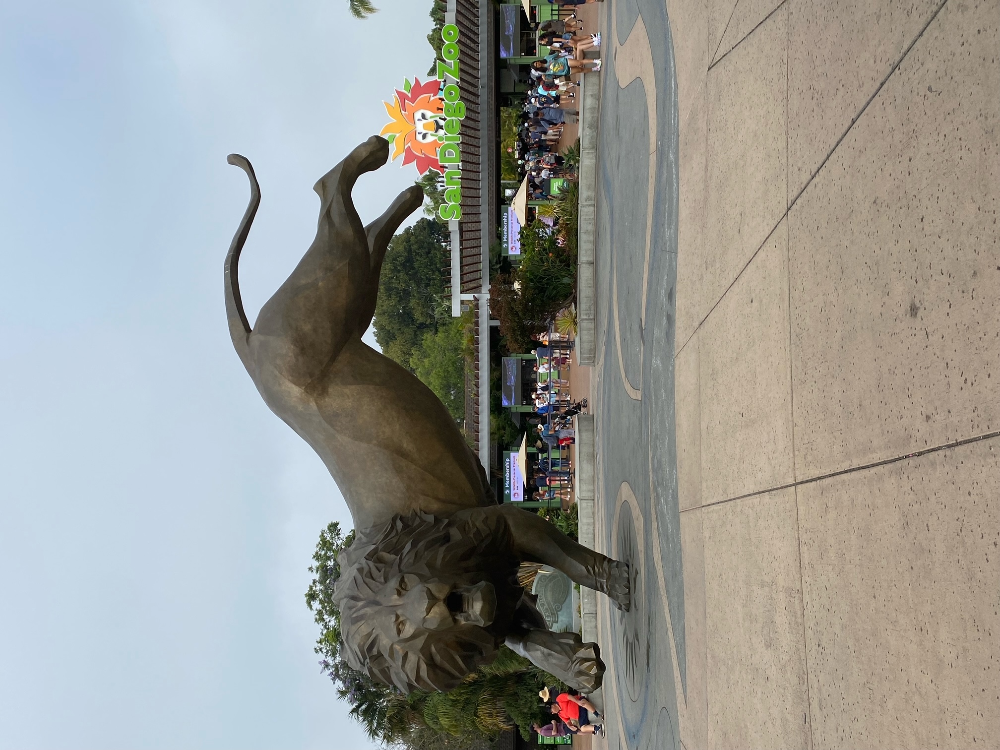
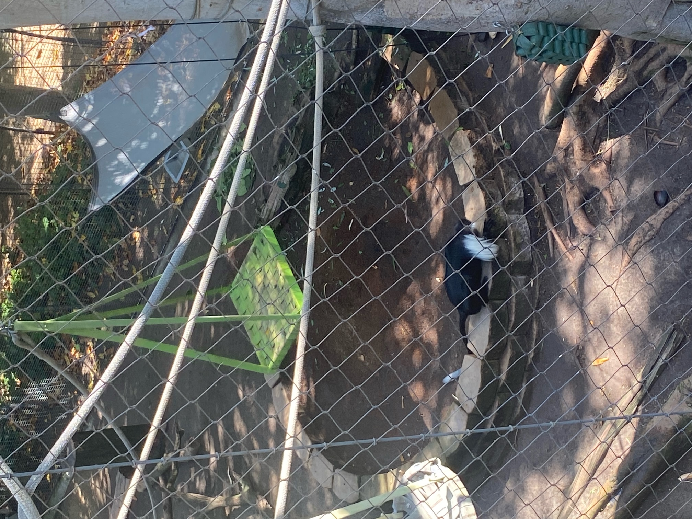
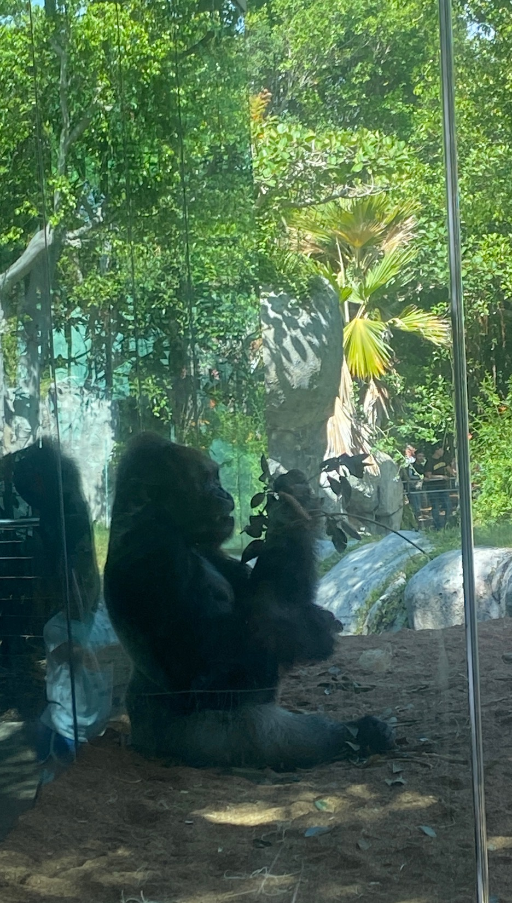
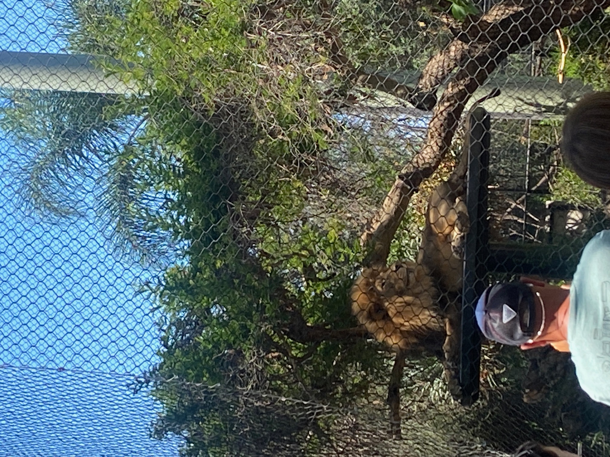
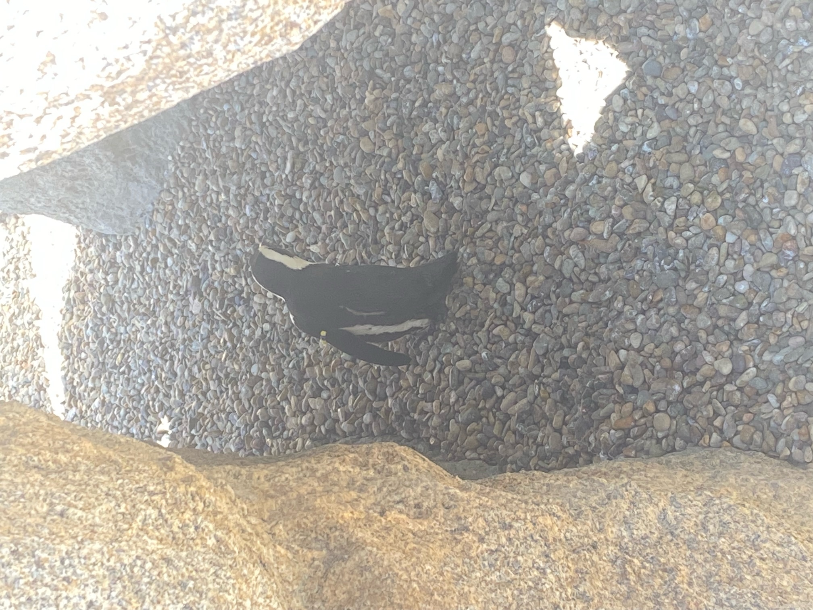
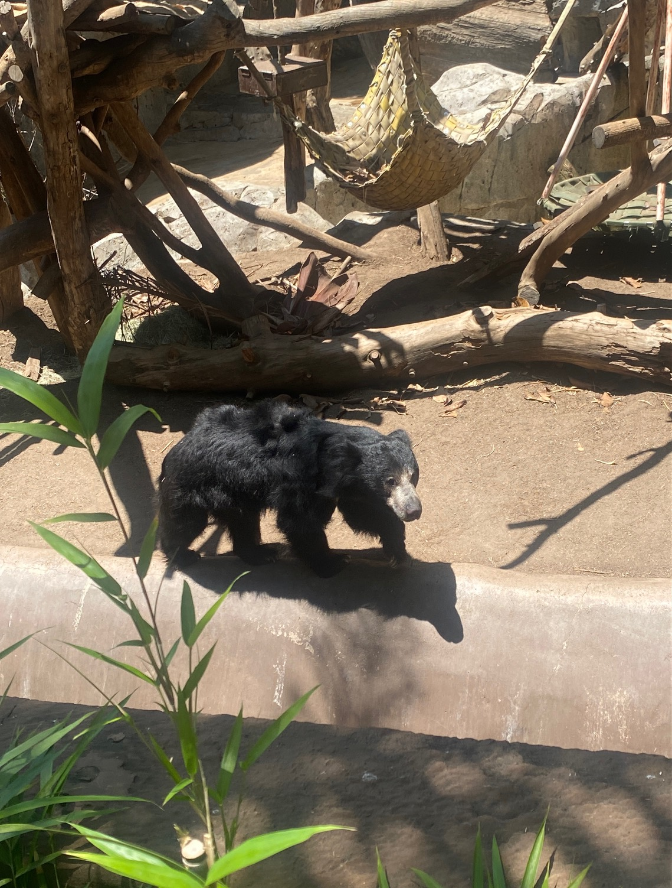

If you go to San Diego then go to the world-famous zoo, is what everyone says. And they’re right!
Angie took the 3 kids to get us some cheap zoo tickets while me and Alison drove straight there to meet them at the lion outside the entrance. “Roar,” as Elliot would say.

The zoo felt too big to do it all, so we started with flamingos and then aimed for the monkeys and apes. “Oo oo ah ah,” as Elliot would say. In the first few areas, we saw animals in every habitat, and they were bounding around, eating and fighting. Early morning before it gets too hot is the smart way to go.

The zoo is hilly, but that’s been used to the advantage of guests and pushchairs as there are paths that weave down and you can see animals at all different heights in their enclosures. We saw loads of monkeys and apes, wandered through one of the many aviaries where I had to duck to avoid a collision. As we moved to see other animals, virtually all were active and visible.
There’s so many animals I don’t think I can remember them all, but I think the tiger and the pygmy hippopotamuses were early in the morning. After a drink stop, we found the bridge across to the other side, aiming for the elephants, via the very impressive gorillas. The elephant enclosure was huge and they were playing with their toys. The jaguar looked at us and the lion sat in its place basking as the weather heated up.


Camels, rattlesnakes (“sssssss,” as Elliot would say), giant rats, condors and meerkats worked us back towards the start. As did a bright green lizard. Unfortunately, it wasn’t part of the zoo and had fallen from a tree, missing Freya by inches. Angie managed to catch Freya’s attention before she stepped on it. That was NOT Freya’s highlight of the holiday.
We walked away from the entrance through the Africa Rocks section, again with lots of visible animals. That took us to the penguins (which we smelled before we saw), who were cute when watching the from the side and even cuter watching them underwater, playing with children as they moved around together.

The only area we were all keen for was the polar bears. We saw a red panda, pink flamingoes, zebras and various deer-like African animals on the way. The polar bears were hiding in a corner, so we only caught a glimpse. On the walk back to the entrance, we saw lemurs and various bears.

Definitely the best zoo we’ve ever been to. Elliot needed a sleep, so Angie took him home while we went to Little Italy for lunch. After some confusion, we got the pizza we wanted. It was delicious. We ambled round the rest of the area then went to the 7Eleven for the $1 slurpies that been advertised about 100 times on the radio so far.
Back at house, we found out Elliot had only had 10 minutes sleep. Angie needed a lie-down so we tried to entertain Elliot to drag him through to normal bedtime. No chance! After some staring into the middle distance for a bit, he had a little nap.
Once everyone woke up, we planned the evening, which was a substitute for Taco Tuesday as we are out at baseball that night. So, we ordered in family-sized Mexican sharing plates and made an attempt to eat as much as we could. The food was all delicious (apart from sauces that were too spicy for Ellises) but we barely made a dent in the overall meal. A fair amount more was eaten by lunch the following day.
Elliot had gone to sleep pretty well but we were all tired, including Richard after being at work. We chilled and watched some Jeopardy, which was entertaining and then we settled into the latest episode of the Bachelorette. We spent the next 90 minutes bitching about the show, the producers, the contestants and the concept while laughing throughout. Jake was so engaged, he is going to use Rich & Angie’s YouTube login to watch the rest of the series.